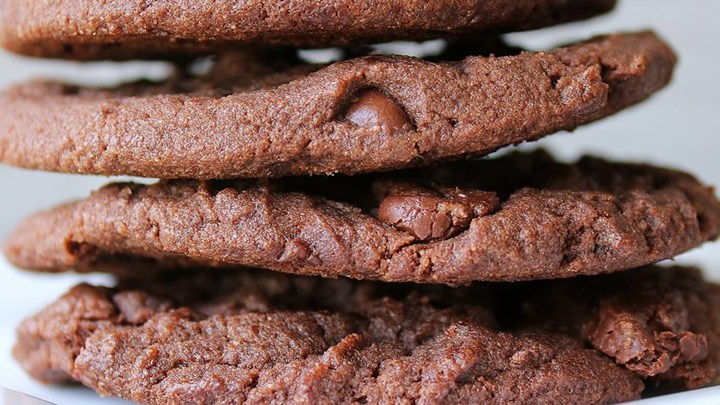

| Ingredients |
| 1 Stick of Butter |
2 tbs Cocoa |
2 Eggs |
- Preheat oven to 350 degrees F (175 degrees C). Whisk together the flour, cocoa powder, and baking soda.
- Beat the butter, white sugar, and brown sugar with an electric mixer in a large bowl until smooth. Beat in one egg until completely incorporated. Beat in the last egg along with the vanilla. Mix in the flour mixture until just incorporated. Fold in the chocolate chips; mixing just enough to evenly combine. Drop by heaped teaspoonfuls onto ungreased baking sheets.
- Bake in the preheated oven until the edges are golden, 9 to 12 minutes. Allow the cookies to cool on the baking sheet for 1 minute before removing to a wire rack to cool completely.